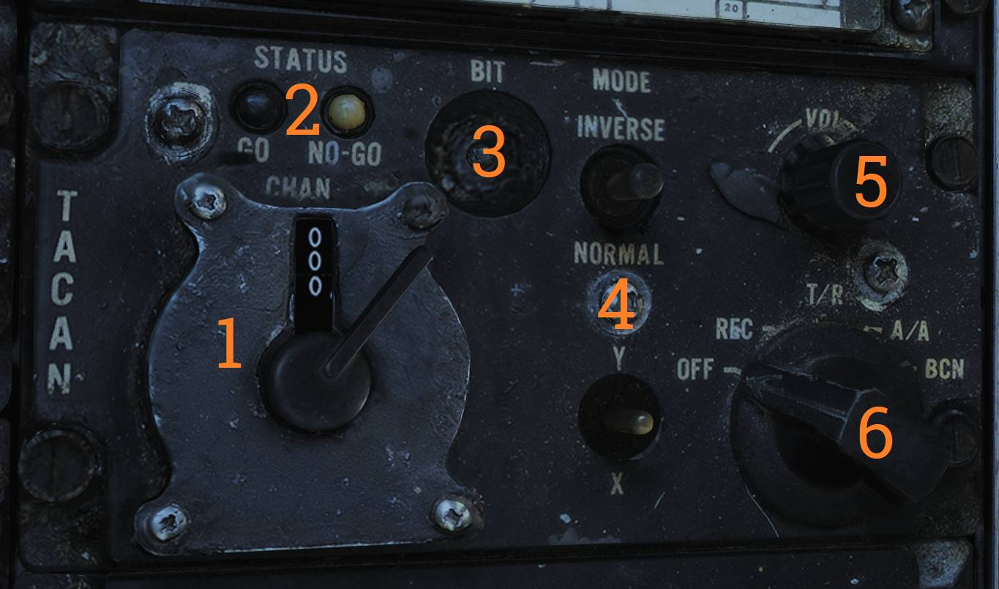
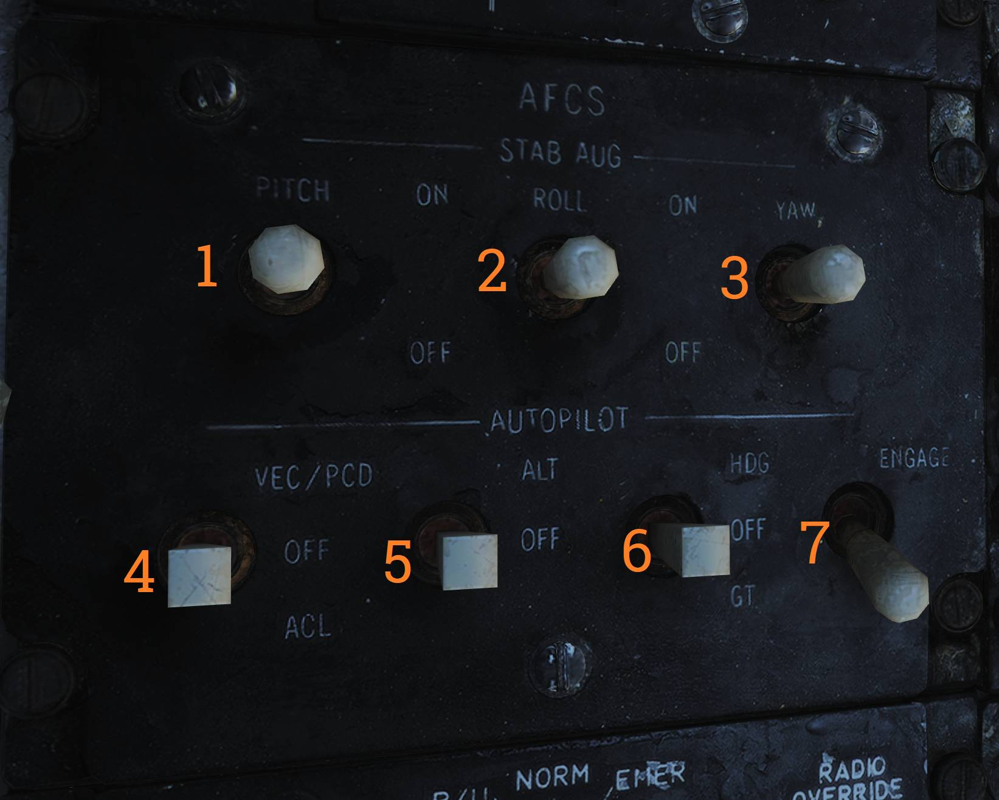
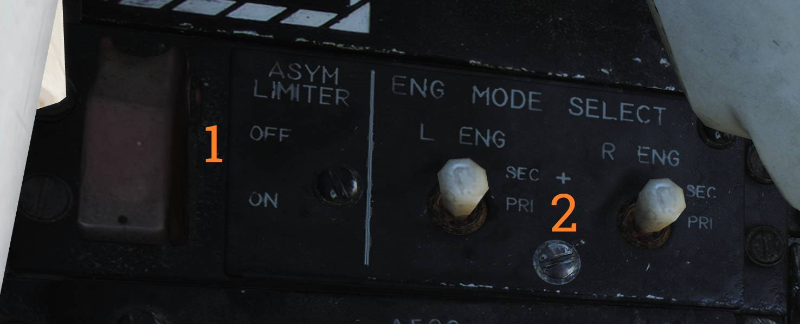
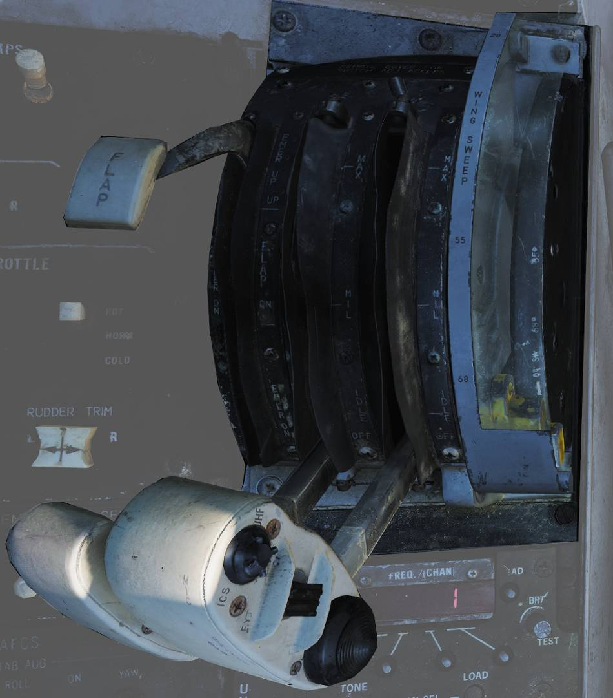

Left Side Console
G-valve Button

The G-valve button is pressed to test inflation of the g-suit.
Oxygen-Vent Airflow Control Panel

Controls ventilation airflow to the pressure suit or seat cushions and controls oxygen flow to the pilot mask.
Vent Airflow Dial
The VENT AIRFLOW dial (
Oxygen Switch
The OXYGEN switch (
- ON — Enables oxygen flow.
- OFF — Disables oxygen flow.
Volume/TACAN Command Panel

Controls pilot headset audio volumes and selects which crewmember is in command of TACAN operation.
F-14B and F-14A (Late)
ALR-67 Volume Knob
The ALR-67 knob (
Sidewinder Tone Volume Knob
The SW knob (
V/UHF 2 Volume Knob
The V/UHF 2 knob (
TACAN Command Switch
The TACAN CMD switch (
F-14A (Early)
ALR-45 Volume Knob
The ALR-45 knob (
ALR-50 Volume Knob
The ALR-50 knob (
Sidewinder Tone Volume Knob (F-14A Early)
The SW knob (
V/UHF 2 Volume Knob (F-14A Early)
The V/UHF 2 knob (
TACAN Command Switch (F-14A Early)
The TACAN CMD switch (
TACAN Control Panel

TACAN control panel used by the pilot when in command of TACAN.
Channel Selector (Dual Rotary Switch)
The dual rotary switch (
The outer dial selects the first two digits and the inner dial selects the final digit.
GO and NO-GO Lights
The GO and NO-GO lights (
BIT Button
The BIT button (
Mode Switches (X/Y and Operating Mode)
The MODE switches (
INVERSE mode is not functional.
TACAN Audio Volume Knob
The VOL knob (
TACAN Mode Selector Knob
The mode knob (
The following modes are available:
- OFF — TACAN off.
- REC — Receive only.
- T/R — Transmit and receive. Enables range readout.
- A/A — Air-to-air TACAN mode.
- BCN — Beacon mode. Not functional.
ICS Control Panel

Control panel for the intercommunications system (ICS).
ICS Volume Knob
The VOL knob (
Amplifier Selection Knob
The amplifier selection knob (
The following amplifiers are available:
- B/U — Backup amplifier.
- NORM — Normal amplifier.
- EMER — Emergency amplifier. Uses the RIO’s amplifier and his volume settings and prevents monitoring of pilot-only audio such as Sidewinder tone and engine stall/overtemperature warnings.
ICS Function Switch
The ICS switch (
Available ICS functions are:
- RADIO OVERRIDE — ICS audio overrides radio audio.
- HOT MIC — Enables intercom without pressing PTT. Also allows ground crew communication through the external interphone.
- COLD MIC — Intercom only while PTT is pressed.
AFCS Control Panel

Control panel for AFCS and autopilot control.
💡 All switches are spring-loaded to OFF but held in position by a solenoid, allowing automatic disengagement when applicable.
Pitch Stability Augmentation Switch
The PITCH switch (
Roll Stability Augmentation Switch
The ROLL switch (
Yaw Stability Augmentation Switch
The YAW switch (
VEC/PCD/ACL Switch
The VEC/PCD/ACL switch (
- VEC/PCD — Vector/PCD mode. Data link controls roll and pitch. Engaged using the NWS button on the pilot stick.
- OFF — Remote-control function off.
- ACL — Automatic carrier landing mode. Engaged using the NWS button on the pilot stick.
Altitude Hold Switch
The ALT switch (
Heading Mode Switch
The HDG switch (
- HDG — Heading hold.
- OFF — Heading hold off.
- GT — Ground track mode. Engaged using the NWS button on the pilot stick.
Autopilot Engage Switch
The ENGAGE switch (
- ENGAGE — Autopilot on.
- OFF — Autopilot off.
UHF 1 (AN/ARC-159) Radio

Pilot UHF radio (UHF 1) and controls.
💡 ADF is nonfunctional with the AN/ARC-159. Use V/UHF 2 instead.
Volume Knob
The VOL knob (
Squelch Switch
The SQL switch (
- ON — Squelch enabled.
- OFF — Squelch disabled.
Frequency Select Switches
The frequency select switches (
Frequency/Channel Display
The FREQ/(CHAN) display (
Read Button
The READ button (
Brightness Knob
The BRT knob (
Load Button
The LOAD button (
Function Selector Knob
The function selector knob (
Channel Select Knob
The CHAN SEL knob (
Preset Channels Chart
The preset channels chart (
Mode Selector Knob
The mode selector knob (
Tone Button
The TONE button (
ASYM Limiter/Engine Mode Select (F-14B only)

Control panel for the asymmetric thrust limiter system and engine control mode selection.
Asymmetry Limiter Switch
The ASYM LIMITER switch (
- ON — Limiter enabled.
- OFF — Limiter disabled.
Engine Mode Select Switches
The ENG MODE SELECT switches (
Selectable engine modes are:
- PRI — Primary engine control mode.
- SEC — Secondary engine control mode.
Target Designate Switch

The target designate switch is used to designate ground targets on the HUD and to command pilot ACM radar modes (except PLM).
The switch can be moved up, down, and forward (designate).
In air-to-ground mode, up and down move the designator and forward designates.
In other modes, up and down select VSL HI and VSL LO, respectively, and forward selects PAL.
Inlet Ramps/Throttle Control Panel

Control panel for engine systems, throttle settings, and rudder trim.
Throttle Mode Switch
The THROTTLE MODE switch (
- AUTO — Automatic.
- BOOST — Boosted.
- MAN — Manual.
Throttle Temp Switch
The THROTTLE TEMP switch (
- HOT — Hot.
- NORM — Normal.
- COLD — Cold.
Inlet Ramps Switches
The INLET RAMPS switches (
- STOW — Stowed.
- AUTO — Automatic.
Engine Crank Selector
The ENG CRANK selector (
Airstart/Backup Ignition Switch
The Airstart/BACK UP IGNITION switch (
- ON — Airstart/Backup ignition enabled.
- OFF — Airstart/Backup ignition disabled.
Rudder Trim Switch
The RUDDER TRIM switch (
Throttle

The throttle grips contain HOTAS flight controls.
Speed Brake Switch
The speed brake switch (
- EXT — Momentary. Extends the speed brake incrementally while held and holds the achieved position when released.
- RET — Retracts the speed brake.
Wing-Sweep Switch
The wing-sweep switch (
- AUTO — Wing sweep controlled automatically by CADC.
- FWD — Sweeps wings forward manually.
- AFT — Sweeps wings aft manually.
- BOMB — Commands 55° wing sweep if currently forward of 55°. If CADC commanded position is aft of 55°, wing sweep follows CADC instead.
PLM Button
The PLM button (
CAGE/SEAM Button
The CAGE/SEAM button (
Exterior Light Switch
The exterior light switch (
- OFF — Disables exterior lights and increases approach light intensity.
- ON — Enables exterior lights and dims approach lights.
ICS PTT Switch
The ICS PTT switch (
- ICS — Keys intercommunication to the RIO.
- BOTH — Keys UHF 1 and V/UHF 2.
- UHF1 — Keys UHF 1.
- UHF2 — Keys V/UHF 2.
Throttle Quadrant
| Quadrant | Schema |
|---|---|
|  |  |
The throttle quadrant contains the two main engine throttle controls, the flap lever, and the manual wing-sweep handle, in addition to HOTAS controls on the throttles.
The throttles have detents in the OFF, IDLE, and MIL positions.
Moving the throttles from OFF to IDLE arms ignition and disengages fuel cutoff.
The sideways throttle movements are not spring-loaded, allowing the pilot to rest the throttles at MIL during catapult launches and preventing accidental spool-down.
A friction lever for throttle movement friction is located on the left side of the throttle quadrant beneath the flap lever.
The flap lever has a stepless range of motion between up and down and includes two emergency positions, emergency up and emergency down. Both have detents and require moving the lever outboard to continue into the emergency range.
Emergency up forces the flaps up, overriding normal flap logic. Emergency down is non-functional.
The manual/emergency wing-sweep handle is guarded and normally stowed. The handle top is extended for manual operation.
For more information see Wing-Sweep System.
Hydraulic Hand Pump
The hydraulic hand pump is located inboard of the throttle quadrant near the pilot’s left leg.
It is used to manually build hydraulic pressure for brake operation (with the gear handle down) or for refueling probe operation in the event of hydraulic system failure.